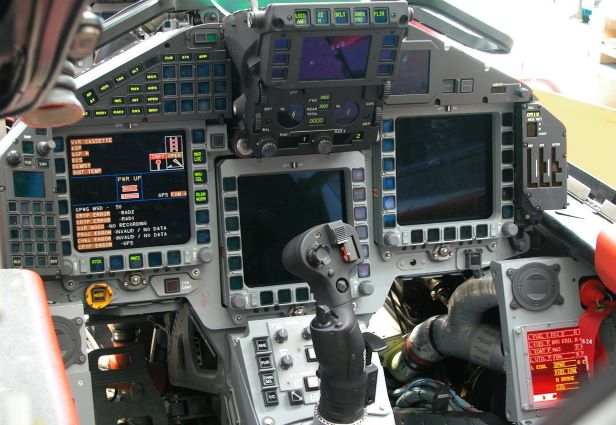

Practical 2: HTML document with Ordered and Unordered lists, Inserting Images, Internal and External linking.
Important Documents
- PANS Procedure for Air Navigation Services
- 4444 PANS ATM
- 8168 PANS OPTIONS
- 8400 PANS ABC
- 9868 PANS STRONG
- 9981 PANS AD
- 10066 PANS AIM
- 7030 AERONAUTICAL INFORMATION MANAGEMENT
- Air Traffic Management
- 9433 Interception of Civil Aircraft
- 9613 Performance Based Navigation(PBN) manual
- 9432 Manual of Radio Telephony
- Aeronautical Information and Charts
- 8896 Manual of Aeronautical Meteorological Practice
- 8643 Aircraft type designators
- 7910 Logical Indicators
- 8126 Aeronautical Information Services manual
- World Geodetic Systems (WGS-84) manual
- Accident Investigation and Prevention
- 9756 Accident Incident Reporting
- Manual of Aircraft Accident Investigation
- Accident Prevention Manual
- Search and Rescue

FOR FURTHER RESEARCH
GO TO TOP
BACK TO INDEX